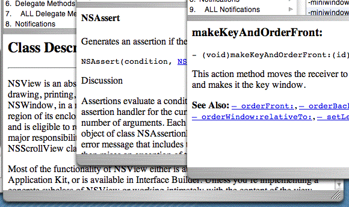
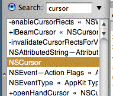
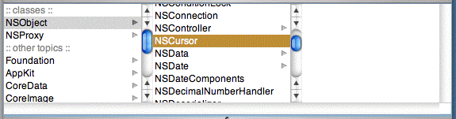
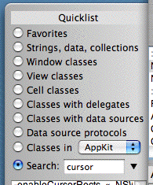
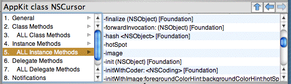
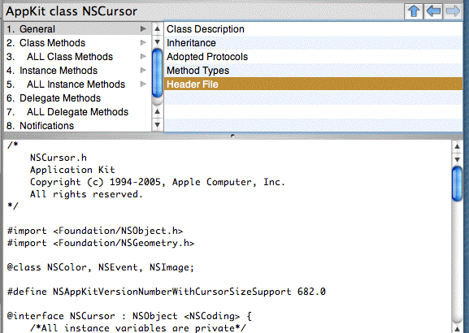

I will be discussing AppKiDo from time to time on my blog.
I announce new releases on the cocoa-dev and macosx-dev lists. If you're not on one of those lists and would like to be notified of new releases, or if you have feedback of any kind, let me know at aglee AT earthlink DOT net. Many thanks to those who have contributed comments, bug reports, and code.
Requirements:
AppKiDo is a free reference tool for Cocoa Objective-C programmers. Its goal is to help you find what you want in the API documentation for the most commonly used Cocoa frameworks. AppKiDo parses the header files and the HTML doc files that were installed with your Developer Tools. It presents the results in a form that is easy to navigate.
| You can usually navigate to the specific documentation you want with just a few clicks, whether it's for a class, protocol, function, type, or constant. |
 |
| If you're not quite sure what you're looking for, AppKiDo can search for names of API constructs. Searches are by substring, not keyword. So, for example, if you're wondering how to manage cursors, search for "cursor". Apple has conveniently put the word "cursor" in the names of most things related to cursors. |
 |
| AppKiDo presents the class hierarchy in a browser view. If you are new to Cocoa, browse the class hierarchy to get acquainted with what's there and how it's organized. If you are more experienced, you can study branches of the hierarchy you never paid attention to before. |
 |
| AppKiDo provides handy "quicklists" of logically related groups of classes. This puts many frequently used classes a click or two away. |
 |
| AppKiDo can display a consolidated list of all methods a class implements, including inherited methods and methods that satisfy a protocol. This can help you understand the complete behavior of a class. |  |
| AppKiDo can open the .h file for any Cocoa class. Sometimes this comes in handy. |  |